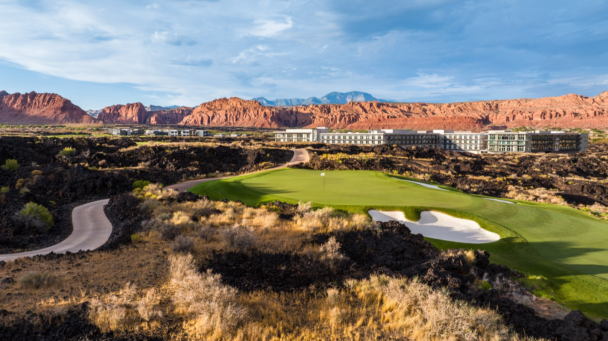
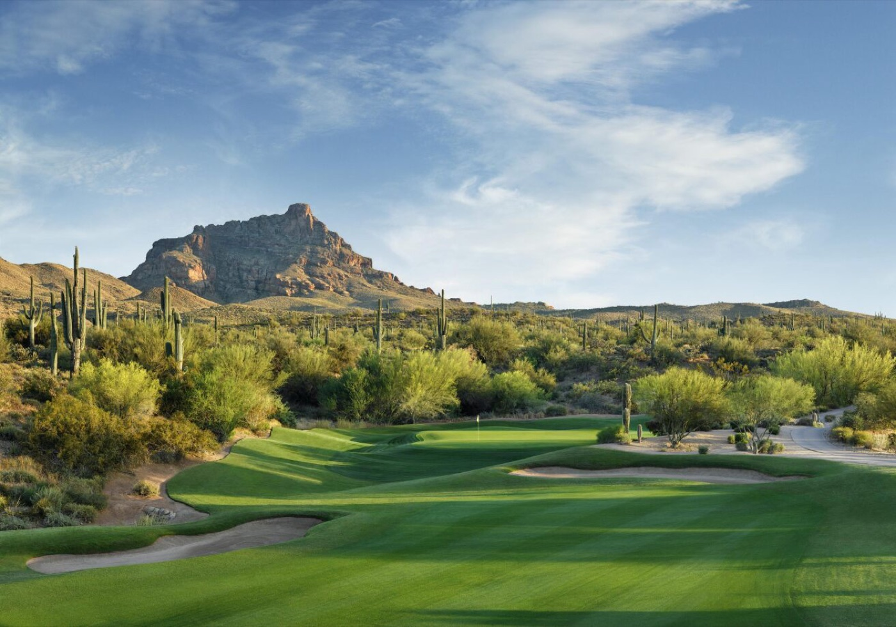

5 Best Fall Golf Destinations for Your Next Golf Trip
June 5, 2026
In partnership with Golfbreaks
Fall is one of the best times of the year to plan your group’s golf trip. With cooler temperatures and prime course conditions, it’s the perfect season to tee it up in some of the top golf destinations across the U.S. From desert layouts to oceanfront fairways to legendary championship venues, planning ahead is the key to getting the best availability for rooms and tee times over your travel dates. Here are our expert picks for the best golf destinations for fall 2026 travel:
1. St. George, Utah
St. George has quickly become one of the hottest golf destinations in the U.S., and fall is the best time to experience it. Surrounded by dramatic red rock mountains, black lava fields, and stunning desert landscapes, this southern Utah gem offers some of the most scenic golf in America.

Some of the top courses to include on your itinerary are Sand Hollow Resort, Copper Rock, Coral Canyon, and Black Desert Resort, host to a PGA TOUR and LPGA event. St. George has a variety of accommodations to choose from including luxury resorts, boutique hotels, or spacious rental homes ideal for golf groups.
Located just two hours from Las Vegas, St. George also pairs perfectly with a Mesquite or Vegas golf road trip.
2. Orlando, Florida
Orlando remains one of the most popular golf trip destinations thanks to its incredible variety of golf courses, resorts, and entertainment options. From championship golf to budget-friendly buddies trips, Orlando has it all.
Feel like a pro when you play the iconic Arnold Palmer’s Bay Hill and enjoy other world-class golf resorts such as Reunion Resort, Omni Orlando ChampionsGate, and Orange County National. Off the course, Orlando offers endless restaurants, nightlife, and attractions, making it ideal for both golf-focused trips and mixed vacation groups.
3. Scottsdale, Arizona
When it comes to desert golf, Scottsdale is the top destination on the list. Fall temperatures create ideal playing conditions across some of the most visually stunning golf courses in the country.

Bucket-list layouts like Troon North, We-Ko-Pa, Grayhawk, and The Boulders showcase dramatic elevation changes, rugged desert terrain, and unforgettable scenery. And no golf trip to Scottsdale would be complete without playing the iconic TPC Scottsdale, home of the WM Phoenix Open.
Off the course, experience luxury resorts, vibrant nightlife in Old Town, casinos, hiking trails, and some of the best Mexican food in the Southwest. If you’re thinking of a golf trip to Scottsdale this fall, start planning NOW!
4. Myrtle Beach, South Carolina
The “Golf Capital of the World” offers unmatched variety with more than 80 golf courses spread across 60 miles of South Carolina coastline.
Play some of the best golf in the region at legendary layouts like TPC Myrtle Beach, True Blue, and Caledonia Golf & Fish Club in southern Myrtle Beach. Large golf groups love Myrtle Beach for its affordability, extensive rental home options, and multi-course golf resorts like Barefoot Resort, Legends Golf Resort, and Myrtlewood Villas.
5. Southern Pines & Pinehurst, North Carolina
For golfers looking for a pure golf experience, few destinations rival the Sandhills of North Carolina. Home to Pinehurst Resort and some of the most historic courses in the country, this region is a dream golf trip destination in the fall.
Play legendary courses like Pine Needles, Mid Pines, and Tobacco Road all within close proximity. Also consider adding Tot Hill Farm to your itinerary, located about an hour away and widely regarded as one of North Carolina’s hidden gems.
Book Your Next Fall Golf Trip
If you’re still looking at booking a golf getaway this year, fall is the perfect opportunity to experience these incredible golf destinations. Cooler weather, ideal course conditions, and peak golf season make it one of the best times to travel for golf.
And once you’ve booked the trip, set up your group on Squabbit to handle the tee sheets, live scoring, side games, and settling up — so everyone can focus on the golf.